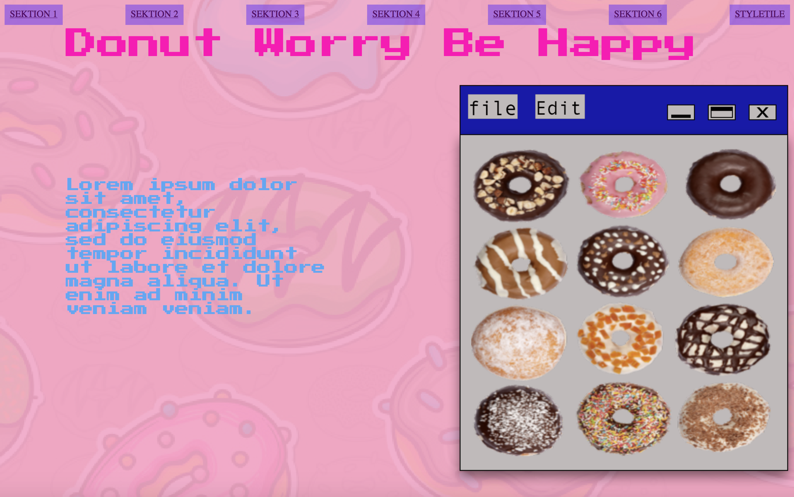
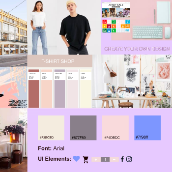

Grundlæggende web
Formålet med dette tema var at tilegne sig de grundlæggende redskaber for en multimediedesigner. Jeg blev introduceret til Brackets og filezilla, fik købt et webhotel, lærte hvordan man satte en webside op med Html og Css. Vi lærte at bruge Photoshop og Adobe XD. Temaet bundede i, at jeg skulle aflevere min studiestartsprøve.
Vi startede ud med at lære om forskellige stilarter indenfor webdesign, hvorefter vi fremlagde dem for resten af holdet i grupper. Vi skulle lave en grafisk analyse, så vi kunne få en forståelse af stilen. Vi kiggede bl.a. på farverne, kompositionen, layout, fonten og andre kendetegn. Til min individuelle hjemmeside valgte jeg at gå videre med det tema, min gruppe havde arbejdet med "digitalt 90'er retro design" som omhandlede donuts. Jeg skulle i gang med min idegenerering og lavede et moodboard, der illustrerede inspiration og den stil og tone, jeg ønskede til min hjemmeside. Jeg brugte bl.a. Unsplash og Pixabay. Man ville også kunne lave et moodboard hvor det æstetiske ikke er i fokus, f.eks. til at beskrive en målgruppe. Herefter gik jeg i gang med at udarbejde mit Styletile. Her viste jeg eksempler på de UI elementer, jeg ville bruge, farver, fonte mm. Jeg brugte det til at blive bevidst om hjemmesidens enkelte designelementer. Dernæst begyndte jeg at arbejde på "skelettet" til min hjemmeside ved at udarbejde en wireframe i hånden. Jeg brugte min wireframe til at vise hjemmesidens layout, placeringen af diverse elementer, og hvordan hjemmesiden så ud i mobilformat såvel som desktop. Jeg opbyggede dernæst en prototype af hjemmesiden i Adobe XD. Her kan man bl.a. sætte grid på ens artboards, hvilket jeg gjorde brug af. Jeg brugte samme program til at designe vores Favicon i 16x16 format, som var en lille donut med krymmel. Jeg gjorde brug af pixelerede billeder af donuts, kontrastfyldte retrofarver, og lavede mit splashbillede i photoshop.
Inden man begynder at kode, er det en god ide at lave et layoutdiagram – her fik vi tildelt et af vores underviser. Jeg kodede dernæst vores hjemmeside i html og css. Html er den grundlæggende konstruktion og struktur af hjemmesiden, og Css er det, som gør det muligt at style ens hjemmeside. Her ændrede jeg farve, tekststørrelse, fonte, afstande osv. I css'en valgte jeg det stykke html kode, jeg ville style. Jeg valgte at hive fat i en class, en section, et link og et image, for bare et nævne et par få eksempler. Herefter brugte jeg "tuborg-klammer" og inden i dem, valgte jeg så det, jeg ville style. Da jeg skulle placere mine billeder på sitet, brugte jeg også grid. Jeg startede med at kode hjemmesiden i mobil format, hvorefter jeg brugte mediaqeury til at gøre siden responsive, så den fungerede både i desktop samt mobilformat.

You may also like
